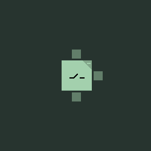
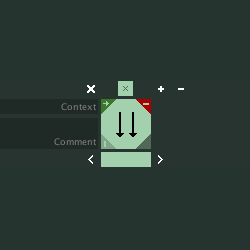
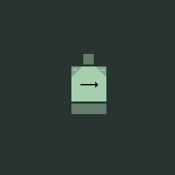
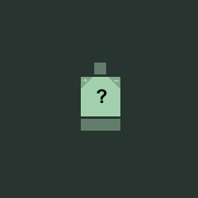
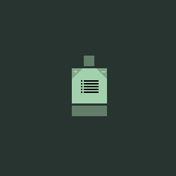
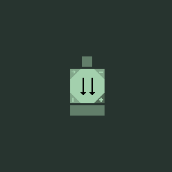
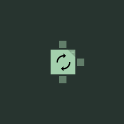
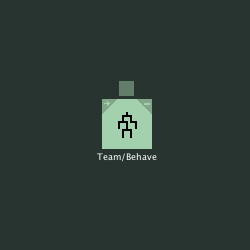
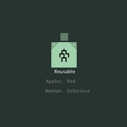

2.3.1 Temasek Polytechnic
Overview
Behave generally distinguishes between two types of nodes: action- and control nodes.
Action nodes are tree leaf nodes, the behaviour of which is directly decided by your code.
Control nodes are built-in node types which can be configured to your needs, but to which you can not add new types. Generally, the purpose of control nodes is flow control – directing a tick to one or more target action nodes.
When visualised, each node is split into as many as three separate boxes. The largest is the node body, at the center of which you find an icon indicating the node type. Various configuration switches may occupy the corners of the node body.

The smaller box above is the input connection socket. Drag connections from an output or control socket to an input socket to connect up nodes. At runtime, the node the connection comes from is then responsible for, under the right circumstances, ticking the node to which the connection goes.
Below the node body, unless the node is an action, is one slim or broad box. This is the output connection socket. Since actions are leaf nodes, they can have no outputs and thus have no output connection socket. A broad output connection socket signified multiple possible outputs whereas a slim connection socket means the node only gives one output connection.
For decorators, a third box is shown to the right of the node body. This is the control connection socket. It dictates the behaviour of the decorator, as outlined in the description of the specific decorator type.
Settings
Each node – regardless of type – shares some base settings.

Comment: This text field just lets you input whatever you like in order to assist when reading and designing trees. It has no runtime implications.
Context: At runtime, each tree has a current context, which is reset when the tree is reset, but can be set by any node as it gets ticked. Tree context is useful as an additional grouping of behaviour – changing how actions or especially priority selectors behave.
Invert: When enabled, the success / failure results of the node are inverted. Running results are unaffected.
Instant: Normally, one branch is executed per tick of a behaviour tree. This happens by control nodes ticking the current child and if its continuation requirement is met, incrementing to next child and returning running themselves – delaying execution of the next child till next tick.
If, however, the child returning success / failure has been marked as instant, the control will immediately proceed to ticking its next child.
Controls
All controls and their behaviour is listed in this section. Note, however, that the editor will also display documentation for the currently selected node.
Sequence

Sequences tick each of their children one at a time from left to right. If a child returns Failure, so does the Sequence. If it returns Success, the Sequence will move on to the next child in line and return Running.
If a child returns Running, so does the Sequence and that same child will be ticked again next time the Sequence is ticked.
Once the Sequence reaches the end of its child list, it returns Success and resets its child index – meaning the first child in the line will be ticked on the next tick of the Sequence.
Selector

Selectors tick each of their children one at a time from left to right. If a child returns Success, then so does the Selector. If it returns Failure, the Selector will move on to the next child in line and return Running.
If a child returns Running, so does the Selector and that same child will be ticked again next time the Selector is ticked.
Once the Selector reaches the end of its child list, it returns Failure and resets its child index – meaning the first child in the line will be ticked on the next tick of the Selector.
Priority

A type of selector, the priority selector shares some behaviour with the action node as its behaviour is dictated by your code.
When ticked, a Priority Selector will query the agent for the highest priority of its outgoing connections. The connection corresponding to the returned id will then be ticked by the Priority Selector and its return value passed on.
If the ticked connection returns Running, then the Priority Selector will not re-query priority on next tick.
If a priority query returns the Unknown priority id or an id outside the queried set, the Priority Selector will return Failure.
Parallel

Unlike other control nodes, the Parallel node ticks all of its children each time it itself is ticked.
The order in which the children are ticked is left to right.
When a Parallel component returns non-Running depends entirely on “Child completion” and “Component completion” settings.
The child completion parameter determines how child return values are handled.
- If set to SuccessOrFailure, a child output is marked as “done” whenever that child returns success or failure.
- If set to Success, only a return value of Success will result in that child output getting the “done” stamp. A return of Failure will result in the Parallel component returning Failure after having ticked all children.
- The Failure setting works the same way – only with a return of Failure being required. It is equivalent to the Success setting with all children nodes set to be inverted.
The component completion parameter determines when the Parallel node returns Success.
- If set to One, the Parallel component will return Success at the end of the first tick where one child output has been marked as “done”.
- If it is set to All, the Parallel component will continue running until all children have been marked as “done”.
Note that the Parallel node checks for failure before it checks for completion. So with component completion set to One and child completion set to Success, if the first child returns Success and the other Failure on the same tick, the Parallel will return Failure.
Until the Parallel node can return either Success or Failure, each tick on it will result in Running.
Decorators
A sub-type of control nodes, decorators are set apart by having a control input connection and only one child connection. Additionally, decorators evaluation does not follow the same rules as that of other nodes.
In Behave 1, decorators were more similar to actions in that their behaviour was dictated directly by the agent class through decorator handlers. Since in Behave 2, decorators are now control nodes, there is no need for on-agent decorator handlers. Behaviour is strictly dictated via the control connection.
Interrupter
Interrupters are evaluated every tick a node in their subtree is.
Each evaluation, the interrupter ticks its control input and if the result is Failure, in stead of (in case of Success) letting the tick pass through, it resets and returns Failure itself.
Control tick resulting in Running effectively delays child execution.
Repeater

Repeaters are evaluated when their child connection returns Success or Failure.
Each evaluation, the repeater ticks its control input and if the result is Success, in stead of (in case of Failure) returning the tick result from its child connection, it resets and returns Running itself.
Control tick resulting in Running has the same effect as Success – only the control input is not reset.
If the control of the repeater is instant, repetition will be immediate. This carries the danger of an infinite loop.
Action

There is not much to say about actions as their behaviour is completely determined by their implementation in your agent code. However in addition to the default settings, actions do come with an additional action name, string parameter and a float parameter.
These are passed directly to the action handler code – allowing additional customisation – aside from the tree context.
Like contexts, action names are not limited by the handler code – the designer can freely type in anything and then worry about implementation later. However it is possible to pre-populate the library with action names, by adding mandatory actions to the library.
Mandatory actions are useful not only as they pre-populate the action name auto-complete, but also if you like to keep some handler code around for not commonly used debug actions.
Reference

A bit of an odd one out, the reference node is not really a control node nor an action node. References facilitate easy re-use of subtrees by allowing the designer to build the subtree as a separate tree and then use it in other trees by simply adding a reference to it.
At runtime the behaviour of the resulting tree is exactly the same as if the referenced tree had been pasted in as a subtree at the location of a reference, however the binary and memory footprint is slightly smaller.
Parametrisation

In order to promote even more re-use of trees through references, you can expose the context, string- and float parameter of tree nodes as named parameters of that tree.
Tree parameters appear on the tree canvas during edit and on reference nodes referencing that tree. Each parameter value may then be set specifically for that reference node.
Naming two parameters of the same type (from different nodes) the same will link them – gaining the external appearance of one parameter.